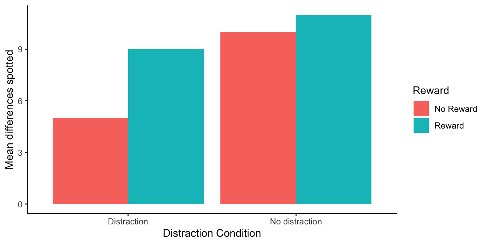

9 Factorial ANOVA
Factorial designs may be the most complicated topic discussed in this class. What’s so complicated? Up until now we have been talking about experiments with two important bits: the independent variable (the manipulation) and the dependent variable (what we measure). In most cases, our independent variable has had two levels, or three or four; but, there has only been one independent variable.
What if you wanted to manipulate more than one independent variable? If you did that you would have at least two independent variables, each with their own levels. The rest of the book is about factorial designs with more than one independent variable, and the statistical tests we use to analyze those designs.
Let’s go through some examples of designs. We will be imagining experiments that are trying to improve students grades. So, the dependent variable will always be grade on a test.
- 1 IV (two levels)
We would use a t-test for these designs, because they only have two levels.
Time of day (Morning versus Afternoon): Do students do better on tests when they take them in the morning versus the afternoon? There is one IV (time of day), with two levels (Morning vs. Afternoon)
Caffeine (some caffeine vs no caffeine): Do students do better on tests when they drink caffeine versus not drinking caffeine? There is one IV (caffeine), with two levels (some caffeine vs no caffeine)
- 1 IV (three levels):
We would use an ANOVA for these designs because they have more than two levels
Time of day (Morning, Afternoon, Night): Do students do better on tests when they take them in the morning, the afternoon, or at night? There is one IV (time of day), with three levels (Morning, Afternoon, and Night)
Caffeine (1 coffee, 2 coffees, 3 coffees): Do students do better on tests when they drink 1 coffee, 2 coffees, or three coffees? There is one IV (caffeine), with three levels (1 coffee, 2 coffees, and 3 coffees)
- 2 IVs: IV1 (two levels), IV2 (two levels)
We haven’t talked about what kind of test to run for this design (hint it is called a factorial ANOVA)
- IV1 (Time of Day: Morning vs. Afternoon); IV2 (Caffeine: some caffeine vs. no caffeine): How does time of day and caffeine consumption influence student grades? We had students take tests in the morning or in the afternoon, with or without caffeine. There are two IVs (time of day & caffeine). IV1 (Time of day) has two levels (morning vs afternoon). IV2 (caffeine) has two levels (some caffeine vs. no caffeine)
OK, let’s stop here for the moment. The first two designs both had one IV. The third design shows an example of a design with 2 IVs (time of day and caffeine), each with two levels. This is called a 2x2 Factorial Design. It is called a factorial design, because the levels of each independent variable are fully crossed. This means that first each level of one IV, the levels of the other IV are also manipulated. “HOLD ON STOP PLEASE!” Yes, it seems as if we are starting to talk in the foreign language of statistics and research designs. We apologize for that. We’ll keep mixing it up with some plain language, and some pictures.
9.1 Factorial basics
9.1.1 2x2 Designs
We’ve just started talking about a 2x2 Factorial design. We said this means the IVs are crossed. To illustrate this, take a look at Figure 9.1. We show an abstract version and a concrete version using time of day and caffeine as the two IVs, each with two levels in the design:

Let’s talk about this crossing business. Here’s what it means for the design. For the first level of Time of Day (morning), we measure test performance when some people drank caffeine and some did not. So, in the morning we manipulate whether or not caffeine is taken. Also, in the second level of the Time of Day (afternoon), we also manipulate caffeine. Some people drink or don’t drink caffeine in the afternoon as well, and we collect measures of test performance in both conditions.
We could say the same thing, but talk from the point of view of the second IV. For example, when people drink caffeine, we test those people in the morning, and in the afternoon. So, time of day is manipulated for the people who drank caffeine. Also, when people do not drink caffeine, we test those people in the morning, and in the afternoon, So, time of day is manipulated for the people who did not drink caffeine.
Finally, each of the four squares representing a DV, is called a condition. So, we have 2 IVs, each with 2 levels, for a total of 4 conditions. This is why we call it a 2x2 design. 2x2 = 4. The notation tells us how to calculate the total number of conditions.
9.1.2 Factorial Notation
Anytime all of the levels of each IV in a design are fully crossed, so that they all occur for each level of every other IV, we can say the design is a fully factorial design.
We use a notation system to refer to these designs. The rules for notation are as follows. Each IV get’s it’s own number. The number of levels in the IV is the number we use for the IV. Let’s look at some examples:
2x2 = There are two IVS, the first IV has two levels, the second IV has 2 levels. There are a total of 4 conditions, 2x2 = 4.
2x3 = There are two IVs, the first IV has two levels, the second IV has three levels. There are a total of 6 conditions, 2x3 = 6
3x2 = There are two IVs, the first IV has three levels, the second IV has two levels. There are a total of 6 conditions, 3x2=6.
4x4 = There are two IVs, the first IV has 4 levels, the second IV has 4 levels. There are a total of 16 condition, 4x4=16
2x3x2 = There are a total of three IVs. The first IV has 2 levels. The second IV has 3 levels. The third IV has 2 levels. There are a total of 12 condition. 2x3x2 = 12.
9.1.3 2 x 3 designs
Figure 9.2 shows the structure of a 2x3 factorial design.

All we did was add another row for the second IV. It’s a 2x3 design, so it should have 6 conditions. As you can see there are now 6 cells to measure the DV.
9.2 Purpose of Factorial Designs
Factorial designs let researchers manipulate more than one thing at once. This immediately makes things more complicated, because as you will see, there are many more details to keep track of. Why would researchers want to make things more complicated? Why would they want to manipulate more than one IV at a time.
Before we go on, let’s clarify what we mean by manipulating more than one thing at once. When you have one IV in your design, by definition, you are manipulating only one thing. This might seem confusing at first, because the IV has more than one level, so it seems to have more than one manipulation. Consider manipulating the number of coffees that people drink before they do a test. We could have one IV (coffee), with three levels (1, 2, or 3 coffees). You might want to say we have three manipulations here, drinking 1, 2, or 3 coffees. But, the way we define manipulation is terms of the IV. There is only one coffee IV. It does have three levels. Nevertheless, we say you are only doing one coffee manipulation. The only thing you are manipulating is the amount of coffee. That’s just one thing, so it’s called one manipulation. To do another, second manipulation, you need to additionally manipulate something that is not coffee (like time of day in our previous example).
Returning to our question: why would researchers want to manipulate more than one thing in their experiment. The answer might be kind of obvious. They want to know if more than one thing causes change in the thing they are measuring! For example, if you are measuring people’s happiness, you might assume that more than one thing causes happiness to change. If you wanted to track down how two things caused changes in happiness, then you might want to have two manipulations of two different IVs. This is not a wrong way to think about the reasons why researchers use factorial designs. They are often interested in questions like this. However, we think this is an unhelpful way to first learn about factorial designs.
We present a slightly different way of thinking about the usefulness of factorial designs, and we think it is so important, it get’s its own section.
9.2.1 Factorials manipulate an effect of interest
Here is how researchers often use factorial designs to understand the causal influences behind the effects they are interested in measuring. Notice we didn’t say the dependent variables they are measuring, we are now talking about something called effects. Effects are the change in a measure caused by a manipulation. You get an effect, any time one IV causes a change in a DV.
Here is an example. We will stick with this one example for a while, so pay attention… In fact, the example is about paying attention. Let’s say you wanted to measure something like paying attention. You could something like this:
Pick a task for people to do that you can measure. For example, you can measure how well they perform the task. That will be the dependent measure
Pick a manipulation that you think will cause differences in paying attention. For example, we know that people can get distracted easily when there are distracting things around. You could have two levels for your manipulation: No distraction versus distraction.
Measure performance in the task under the two conditions
If your distraction manipulation changes how people perform the task, you may have successfully manipulated how well people can pay attention in your task.
9.2.2 Spot the difference
Let’s elaborate this with another fake example. First, we pick a task. It’s called spot the difference. You may have played this game before. You look at two pictures side-by-side in Figure 9.3, and then you locate as many differences as you can find.

How many differences can you spot? When you look for the differences, it feels like you are doing something we would call “paying attention”. If you pay attention to the clock tower, you will see that the hands on the clock are different. Ya! One difference spotted.
We could give people 30 seconds to find as many differences as they can. Then we give them another set of pictures and do it again. Every time we will measure how many differences they can spot. So, our measure of performance, our dependent variable, could be the mean number of differences spotted.
9.2.3 Distraction manipulation
Now, let’s think about a manipulation that might cause differences in how people pay attention. If people need to pay attention to spot differences, then presumably if we made it difficult to pay attention, people would spot less differences. What is a good way to distract people? I’m sure there are lots of ways to do this. How about we do the following:
No distraction condition: Here people do the task with no added distractions. They sit in front of a computer, in a quiet, distraction-free room, and find as many differences as they can for each pair of pictures
Distraction condition: Here we blast super loud ambulance sounds and fire alarms and heavy metal music while people attempt to spot differences. We also randomly turn the sounds on and off, and make them super-duper annoying and distracting. We make sure that the sounds aren’t loud enough to do any physical damage to anybody’s ear-drums. But, we want to make them loud enough to be super distracting. If you don’t like this, we could also tickle people with a feather, or whisper silly things into their ears, or surround them by clowns, or whatever we want, it just has to be super distracting.
9.2.4 Distraction effect
If our distraction manipulation is super-distracting, then what should we expect to find when we compare spot-the-difference performance between the no-distraction and distraction conditions? We should find a difference!
If our manipulation works, then we should find that people find more differences when they are not distracted, and less differences when they are distracted. Figure 9.4 shows how the data might look.
The figure shows a big difference in the mean number of difference spotted. People found 5 differences on average when they were distracted, and 10 differences when they were not distracted. We labelled the figure, “The distraction effect”, because it shows a big effect of distraction. The effect of distraction is a mean of 5 spot the differences. It’s the difference between performance in the Distraction and No-Distraction conditions. In general, it is very common to use the word effect to refer to the differences caused by the manipulation. We manipulated distraction, it caused a difference, so we call this the “distraction effect”.
9.2.5 Manipulating the Distraction effect
This is where factorial designs come in to play. We have done the hard work of finding an effect of interest, in this case the distraction effect. We think this distraction effect actually measures something about your ability to pay attention. For example, if you were the kind of person who had a small distraction effect (maybe you find 10 differences when you are not distracted, and 9 differences when you are distracted), that could mean you are very good at ignoring distracting things while you are paying attention. On the other hand, you could be the kind of person who had a big distraction effect (maybe you found 10 differences under no distraction, and only 1 difference when you were distracted); this could mean you are not very good at ignoring distracting things while you are paying attention.
Overall now, we are thinking of our distraction effect (the difference in performance between the two conditions) as the important thing we want to measure. We then might want to know how to make people better at ignoring distracting things. Or, we might want to know what makes people worse at ignoring things. In other words we want to find out what manipulations control the size of the distraction effect (make it bigger or smaller, or even flip around!).
Maybe there is a special drug that helps you ignore distracting things. People taking this drug should be less distracted, and if they took this drug while completing our task, they should have a smaller distraction effect compared to people not taking the drug.
Maybe rewarding people with money can help you pay attention and ignore distracting things better. People receiving 5 dollars every time they spot a difference might be able to focus more because of the reward, and they would show a smaller distraction effect in our task, compared to people who got no money for finding differences. Let’s see what this would look like.
We are going to add a second IV to our task. The second IV will manipulate reward. In one condition, people will get 5 dollars for every difference they find (so they could leave the study with lots of money if they find lots of differences). In the other condition, people will get no money, but they will still have find differences. Remember, this will be a factorial design, so everybody will have to find differences when they are distracted and when they are not distracted.
The question we are now asking is: Will manipulating reward cause a change in the size of the distraction effect. We could predict that people receiving rewards will have a smaller distraction effect than people not receiving rewards. If that happened, the data would look something like Figure 9.5.

I’ve just shown you a new kind of graph. I apologize right now for showing this to you first. It’s more unhelpful than the next graph. What I did was keep the x-axis the same as before (to be consistent). So, we have distraction vs. no distraction on the x-axis. In the distraction condition, there are means for spot-the-difference performance in the no-reward (red), and reward (aqua) conditions. The same goes for the no-distraction condition, a red and an aqua bar for the no-reward and reward conditions. We can try to interpret this graph, but Figure 9.6 plots the same data in a way that makes it easier to see what we are talking about.
All we did was change the x-axis. Now the left side of the x-axis is for the no-reward condition, and the right side is for the reward condition. The red bar is for the distraction condition, and the aqua bar is for the no distraction condition. It is easier to see the distraction effect in this graph. The distraction effect is the difference in size between the red and aqua bars. For each reward condition, the red and aqua bars are right beside each other, so can see if there is a difference between them more easily, compared to the first graph.
No-Reward condition: In the no-reward condition people played spot the difference when they were distracted and when they were not distracted. This is a replication of our first fake study. We should expect to find the same pattern of results, and that’s what the graph shows. There was a difference of 5. People found 5 differences when they were distracted and 10 when they were not distracted. So, there was a distraction effect of 5, same as we had last time.
Reward condition: In the reward condition people played spot the difference when they were distracted and when they were not distracted. Except, they got 5 dollars every time they spotted a difference. We predicted this would cause people to pay more attention and do a better job of ignoring distracting things. The graph shows this is what happened. People found 9 differences when they were distracted and 11 when they were not distracted. So, there was a distraction effect of 2.
If we had conducted this study, we might have concluded that reward can manipulate the distraction effect. When there was no reward, the size of the distraction effect was 5. When there was reward, the size of the distraction effect was 2. So, the reward manipulation changed the size of the distraction effect by 3 (5-2 =3).
This is our description of why factorial designs are so useful. They allow researchers to find out what kinds of manipulations can cause changes in the effects they measure. We measured the distraction effect, then we found that reward causes changes in the distraction effect. If we were trying to understand how paying attention works, we would then need to explain how it is that reward levels could causally change how people pay attention. We would have some evidence that reward does cause change in paying attention, and we would have to come up with some explanations, and then run more experiments to test whether those explanations hold water.
9.3 Graphing the means
In our example above we showed you two bar graphs of the very same means for our 2x2 design. Even though the graphs plot identical means, they look different, so they are more or less easy to interpret by looking at them. Results from 2x2 designs are also often plotted with line graphs. Those look different too. There are four different graphs in Figure 9.7, using bars and lines to plot the very same means from before. We are showing you this so that you realize how you graph your data matters because it makes it more or less easy for people to understand the results. Also, how the data is plotted matters for what you need to look at to interpret the results.

9.4 Knowing what you want to find out
When you conduct a design with more than one IV, you get more means to look at. As a result, there are more kinds of questions that you can ask of the data. Sometimes it turns out that the questions that you can ask, are not the ones that you want to ask, or have an interest in asking. Because you ran the design with more than one IV, you have the opportunity to ask these kinds of extra questions.
What kinds of extra questions? Let’s keep going with our distraction effect experiment. We have the first IV where we manipulated distraction. So, we could find the overall means in spot-the difference for the distraction vs. no-distraction conditions (that’s two means). The second IV was reward. We could find the overall means in spot-the-difference performance for the reward vs. no-reward conditions (that’s two more means). We could do what we already did, and look at the means for each combination, that is the mean for distraction/reward, distraction/no-reward, no-distraction/reward, and no-distraction/no-reward (that’s four more means, if you’re counting).
There’s even more. We could look at the mean distraction effect (the difference between distraction and no-distraction) for the reward condition, and the mean distraction effect for the no-reward condition (that’s two more).
Figure 9.8 shows multiple ways of looking at the means across four panels.
The purpose of showing all of these means is to orient you to your problem. If you conduct a 2x2 design (and this is the most simple factorial that you can conduct), you will get all of these means. You need to know what you want to know from the means. That is, you need to be able to connect the research question to the specific means you are interested in analyzing.
For example, in our example, the research question was whether reward would change the size of the distraction effect. The top left panel gives us some info about this question. We can see all of the condition means, and we can visually see that the distraction effect was larger in the No-reward compared to the reward condition. But, to “see” this, we need to do some visual subtraction. You need to look at the difference between the red and aqua bars for each of the reward and no-reward conditions.
Does the top right panel tell us about whether reward changed the size of the distraction effect? NO, it just shows that there was an overall distraction effect (this is called the main effect of distraction). Main effects are any differences between the levels of one independent variable.
Does the bottom left panel tell us about whether reward changed the size of the distraction effect? NO! it just shows that there was an overall reward effect, called the main effect of reward. People who were rewarded spotted a few more differences than the people who weren’t, but this doesn’t tell us if they were any less distracted.
Finally, how about the bottom left panel. Does this tell us about whether the reward changed the size of the distraction effect? YES! Notice, the y-axis is different for this panel. The y-axis here is labelled “Distraction Effect”. You are looking at two difference scores. The distraction effect in the no-reward condition (10-5 = 5), and the distraction effect in the Reward condition (11-9 = 2). These two bars are different as a function of reward. So, it looks like reward did produce a difference between the distraction effects! This was the whole point of the fake study. It is these means that were most important for answering the question of the study. As a very last point, this panel contains what we call an interaction. We explain this in the next section.
Make sure you know what you want to know from your means before you run the study, otherwise you will just have way too many means, and you won’t know what they mean.
9.5 Simple analysis of 2x2 repeated measures design
Normally in a chapter about factorial designs we would introduce you to Factorial ANOVAs, which are totally a thing. We will introduce you to them soon. But, before we do that, we are going to show you how to analyze a 2x2 repeated measures ANOVA design with paired-samples t-tests. This is probably something you won’t do very often. However, it turns out the answers you get from this method are the same ones you would get from an ANOVA.
Admittedly, if you found the explanation of ANOVA complicated, it will just appear even more complicated for factorial designs. So, our purpose here is to delay the complication, and show you with t-tests what it is that the Factorial ANOVA is doing. More important, when you do the analysis with t-tests, you have to be very careful to make all of the comparisons in the right way. As a result, you will get some experience learning how to know what it is you want to know from factorial designs. Once you know what you want to know, you can use the ANOVA to find out the answers, and then you will also know what answers to look for after you run the ANOVA. Isn’t new knowledge fun!
The first thing we need to do is define main effects and interactions. Whenever you conduct a Factorial design, you will also have the opportunity to analyze main effects and interactions. However, the number of main effects and interactions you get to analyse depends on the number of IVs in the design.
9.5.1 Main effects
Formally, main effects are the mean differences for a single Independent variable. There is always one main effect for each IV. A 2x2 design has 2 IVs, so there are two main effects. In our example, there is one main effect for distraction, and one main effect for reward. We will often ask if the main effect of some IV is significant. This refers to a statistical question: Were the differences between the means for that IV likely or unlikely to be caused by chance (sampling error).
If you had a 2x2x2 design, you would measure three main effects, one for each IV. If you had a 3x3x3 design, you would still only have 3 IVs, so you would have three main effects.
9.5.2 Interaction
We find that the interaction concept is one of the most confusing concepts for factorial designs. Formally, we might say an interaction occurs whenever the effect of one IV has an influence on the size of the effect for another IV. That’s probably not very helpful. In more concrete terms, using our example, we found that the reward IV had an effect on the size of the distraction effect. The distraction effect was larger when there was no-reward, and it was smaller when there was a reward. So, there was an interaction.
We might also say an interaction occurs when the difference between the differences are different! Yikes. Let’s explain. There was a difference in spot-the-difference performance between the distraction and no-distraction condition, this is called the distraction effect (it is a difference measure). The reward manipulation changed the size of the distraction effect, that means there was difference in the size of the distraction effect. The distraction effect is itself a measure of differences. So, we did find that the difference (in the distraction effect) between the differences (the two measures of the distraction effect between the reward conditions) were different. When you start to write down explanations of what interactions are, you find out why they come across as complicated. We’ll leave our definition of interaction like this for now. Don’t worry, we’ll go through lots of examples to help firm up this concept for you.
The number of interactions in the design also depend on the number of IVs. For a 2x2 design there is only 1 interaction. The interaction between IV1 and IV2. This occurs when the effect of say IV2 (whether there is a difference between the levels of IV2) changes across the levels of IV1. We could write this in reverse, and ask if the effect of IV1 (whether there is a difference between the levels of IV1) changes across the levels of IV2. However, just because we can write this two ways, does not mean there are two interactions. We’ll see in a bit, that no matter how do the calculation to see if the difference scores–measure of effect for one IV– change across the levels of the other IV, we always get the same answer. That is why there is only one interaction for a 2x2. Similarly, there is only one interaction for a 3x3, because there again we only have two IVs (each with three levels). Only when we get up to designs with more than 2 IVs, do we find more possible interactions. A design with three IVS, has four interactions. If the IVs are labelled A, B, and C, then we have three 2-way interactions (AB, AC, and BC), and one three-way interaction (ABC). We hold off on this stuff for much later
9.5.3 Looking at the data
It is most helpful to see some data in order to understand how we will analyze it. Let’s imagine we ran our fake attention study. We will have five people in the study, and they will participate in all conditions, so it will be a fully repeated-measures design. The data could look like this:
| subject | A | B | C | D |
|---|---|---|---|---|
| 1 | 10 | 5 | 12 | 9 |
| 2 | 8 | 4 | 13 | 8 |
| 3 | 11 | 3 | 14 | 10 |
| 4 | 9 | 4 | 11 | 11 |
| 5 | 10 | 2 | 13 | 12 |
| Note: | ||||
| Number of differences spotted for each subject in each condition. |
9.5.4 Main effect of Distraction
The main effect of distraction compares the overall means for all scores in the no-distraction and distraction conditions, collapsing over the reward conditions.
The yellow columns show the no-distraction scores for each subject. The blue columns show the distraction scores for each subject.
The overall means for for each subject, for the two distraction conditions are shown to the right. For example, subject 1 had a 10 and 12 in the no-distraction condition, so their mean is 11.
We are interested in the main effect of distraction. This is the difference between the AC column (average of subject scores in the no-distraction condition) and the BD column (average of the subject scores in the distraction condition). These differences for each subject are shown in the last green column. The overall means, averaging over subjects are in the bottom green row.
| subject | A | B | C | D | AC | BD | AC.minus.BD |
|---|---|---|---|---|---|---|---|
| 1 | 10 | 5 | 12 | 9 | 11 | 7 | 4 |
| 2 | 8 | 4 | 13 | 8 | 10.5 | 6 | 4.5 |
| 3 | 11 | 3 | 14 | 10 | 12.5 | 6.5 | 6 |
| 4 | 9 | 4 | 11 | 11 | 10 | 7.5 | 2.5 |
| 5 | 10 | 2 | 13 | 12 | 11.5 | 7 | 4.5 |
| Means | 11.1 | 6.8 | 4.3 |
Just looking at the means, we can see there was a main effect of Distraction, the mean for the no-distraction condition was 11.1, and the mean for the distraction condition was 6.8. The size of the main effect was 4.3 (the difference between 11.1 and 6.8).
Now, what if we wanted to know if this main effect of distraction (the difference of 4.3) could have been caused by chance, or sampling error. You could do two things. You could run a paired samples \(t\)-test between the mean no-distraction scores for each subject (column AC) and the mean distraction scores for each subject (column BD). Or, you could run a one-sample \(t\)-test on the difference scores column, testing against a mean difference of 0. Either way you will get the same answer.
Here’s the paired samples version:
#>
#> Paired t-test
#>
#> data: AC and BD
#> t = 7.6615, df = 4, p-value = 0.00156
#> alternative hypothesis: true difference in means is not equal to 0
#> 95 percent confidence interval:
#> 2.741724 5.858276
#> sample estimates:
#> mean of the differences
#> 4.3Here’s the one sample version:
#>
#> One Sample t-test
#>
#> data: AC - BD
#> t = 7.6615, df = 4, p-value = 0.00156
#> alternative hypothesis: true mean is not equal to 0
#> 95 percent confidence interval:
#> 2.741724 5.858276
#> sample estimates:
#> mean of x
#> 4.3If we were to write-up our results for the main effect of distraction we could say something like this:
The main effect of distraction was significant, \(t\)(4) = 7.66, \(p\) = 0.001. The mean number of differences spotted was higher in the no-distraction condition (M = 11.1) than the distraction condition (M = 6.8).
9.5.5 Main effect of Reward
The main effect of reward compares the overall means for all scores in the no-reward and reward conditions, collapsing over the reward conditions.
The yellow columns show the no-reward scores for each subject. The blue columns show the reward scores for each subject.
The overall means for for each subject, for the two reward conditions are shown to the right. For example, subject 1 had a 10 and 5 in the no-reward condition, so their mean is 7.5.
We are interested in the main effect of reward. This is the difference between the AB column (average of subject scores in the no-reward condition) and the CD column (average of the subject scores in the reward condition). These differences for each subject are shown in the last green column. The overall means, averaging over subjects are in the bottom green row.
| subject | A | B | C | D | AB | CD | CD.minus.AB |
|---|---|---|---|---|---|---|---|
| 1 | 10 | 5 | 12 | 9 | 7.5 | 10.5 | 3 |
| 2 | 8 | 4 | 13 | 8 | 6 | 10.5 | 4.5 |
| 3 | 11 | 3 | 14 | 10 | 7 | 12 | 5 |
| 4 | 9 | 4 | 11 | 11 | 6.5 | 11 | 4.5 |
| 5 | 10 | 2 | 13 | 12 | 6 | 12.5 | 6.5 |
| Means | 6.6 | 11.3 | 4.7 |
Just looking at the means, we can see there was a main effect of reward. The mean number of differences spotted was 11.3 in the reward condition, and 6.6 in the no-reward condition. So, the size of the main effect of reward was 4.7.
Is a difference of this size likely o unlikely due to chance? We could conduct a paired-samples \(t\)-test on the AB vs. CD means, or a one-sample \(t\)-test on the difference scores. They both give the same answer:
Here’s the paired samples version:
#>
#> Paired t-test
#>
#> data: CD and AB
#> t = 8.3742, df = 4, p-value = 0.001112
#> alternative hypothesis: true difference in means is not equal to 0
#> 95 percent confidence interval:
#> 3.141724 6.258276
#> sample estimates:
#> mean of the differences
#> 4.7Here’s the one sample version:
#>
#> One Sample t-test
#>
#> data: CD - AB
#> t = 8.3742, df = 4, p-value = 0.001112
#> alternative hypothesis: true mean is not equal to 0
#> 95 percent confidence interval:
#> 3.141724 6.258276
#> sample estimates:
#> mean of x
#> 4.7If we were to write-up our results for the main effect of reward we could say something like this:
The main effect of reward was significant, t(4) = 8.37, p = 0.001. The mean number of differences spotted was higher in the reward condition (M = 11.3) than the no-reward condition (M = 6.6).
9.5.6 Interaction between Distraction and Reward
Now we are ready to look at the interaction. Remember, the whole point of this fake study was what? Can you remember?
Here’s a reminder. We wanted to know if giving rewards versus not would change the size of the distraction effect.
Notice, neither the main effect of distraction, or the main effect of reward, which we just went through the process of computing, answers this question.
In order to answer the question we need to do two things. First, compute distraction effect for each subject when they were in the no-reward condition. Second, compute the distraction effect for each subject when they were in the reward condition.
Then, we can compare the two distraction effects and see if they are different. The comparison between the two distraction effects is what we call the interaction effect. Remember, this is a difference between two difference scores. We first get the difference scores for the distraction effects in the no-reward and reward conditions. Then we find the difference scores between the two distraction effects. This difference of differences is the interaction effect (green column in the table)
| subject | A | B | C | D | A-B | C-D | (A-B)-(C-D) |
|---|---|---|---|---|---|---|---|
| 1 | 10 | 5 | 12 | 9 | 5 | 3 | 2 |
| 2 | 8 | 4 | 13 | 8 | 4 | 5 | -1 |
| 3 | 11 | 3 | 14 | 10 | 8 | 4 | 4 |
| 4 | 9 | 4 | 11 | 11 | 5 | 0 | 5 |
| 5 | 10 | 2 | 13 | 12 | 8 | 1 | 7 |
| Means | 6 | 2.6 | 3.4 |
The mean distraction effects in the no-reward (6) and reward (2.6) conditions were different. This difference is the interaction effect. The size of the interaction effect was 3.4.
How can we test whether the interaction effect was likely or unlikely due to chance? We could run another paired-sample \(t\)-test between the two distraction effect measures for each subject, or a one sample \(t\)-test on the green column (representing the difference between the differences). Both of these \(t\)-tests will give the same results:
Here’s the paired samples version:
#>
#> Paired t-test
#>
#> data: A_B and C_D
#> t = 2.493, df = 4, p-value = 0.06727
#> alternative hypothesis: true difference in means is not equal to 0
#> 95 percent confidence interval:
#> -0.3865663 7.1865663
#> sample estimates:
#> mean of the differences
#> 3.4Here’s the one sample version:
#>
#> One Sample t-test
#>
#> data: A_B - C_D
#> t = 2.493, df = 4, p-value = 0.06727
#> alternative hypothesis: true mean is not equal to 0
#> 95 percent confidence interval:
#> -0.3865663 7.1865663
#> sample estimates:
#> mean of x
#> 3.4Oh look, the interaction was not significant. At least, if we had set our alpha criterion to 0.05, it would not have met that criteria. We could write up the results like this. The two-way interaction between between distraction and reward was not significant, \(t\)(4) = 2.493, \(p\) = 0.067.
Often times when a result is “not significant” according to the alpha criteria, the pattern among the means is not described further. One reason for this practice is that the researcher is treating the means as if they are not different (because there was an above alpha probability that the observed differences were due to chance). If they are not different, then there is no pattern to report.
There are differences in opinion among reasonable and expert statisticians on what should or should not be reported. Let’s say we wanted to report the observed mean differences, we would write something like this:
The two-way interaction between between distraction and reward was not significant, t(4) = 2.493, p = 0.067. The mean distraction effect in the no-reward condition was 6 and the mean distraction effect in the reward condition was 2.6.
9.5.7 Writing it all up
We have completed an analysis of a 2x2 repeated measures design using paired-samples \(t\)-tests. Here is what a full write-up of the results could look like.
The main effect of distraction was significant, \(t\)(4) = 7.66, \(p\) = 0.001. The mean number of differences spotted was higher in the no-distraction condition (M = 11.1) than the distraction condition (M = 6.8).
The main effect of reward was significant, \(t\)(4) = 8.37, \(p\) = 0.001. The mean number of differences spotted was higher in the reward condition (M = 11.3) than the no-reward condition (M = 6.6).
The two-way interaction between between distraction and reward was not significant, \(t\)(4) = 2.493, \(p\) = 0.067. The mean distraction effect in the no-reward condition was 6 and the mean distraction effect in the reward condition was 2.6.
Interim Summary. We went through this exercise to show you how to break up the data into individual comparisons of interest. Generally speaking, a 2x2 repeated measures design would not be analyzed with three paired-samples \(t\)-test. This is because it is more convenient to use the repeated measures ANOVA for this task. We will do this in a moment to show you that they give the same results. And, by the same results, what we will show is that the \(p\)-values for each main effect, and the interaction, are the same. The ANOVA will give us \(F\)-values rather than \(t\) values. It turns out that in this situation, the \(F\)-values are related to the \(t\) values. In fact, \(t^2 = F\).
9.5.8 2x2 Repeated Measures ANOVA
We just showed how a 2x2 repeated measures design can be analyzed using paired-sampled \(t\)-tests. We broke up the analysis into three parts. The main effect for distraction, the main effect for reward, and the 2-way interaction between distraction and reward. We claimed the results of the paired-samples \(t\)-test analysis would mirror what we would find if we conducted the analysis using an ANOVA. Let’s show that the results are the same. Here are the results from the 2x2 repeated-measures ANOVA, using the aov function in R.
| Df | Sum Sq | Mean Sq | F value | Pr(>F) | |
|---|---|---|---|---|---|
| Residuals | 4 | 3.70 | 0.925 | NA | NA |
| Distraction | 1 | 92.45 | 92.450 | 58.698413 | 0.0015600 |
| Residuals | 4 | 6.30 | 1.575 | NA | NA |
| Reward | 1 | 110.45 | 110.450 | 70.126984 | 0.0011122 |
| Residuals1 | 4 | 6.30 | 1.575 | NA | NA |
| Distraction:Reward | 1 | 14.45 | 14.450 | 6.215054 | 0.0672681 |
| Residuals | 4 | 9.30 | 2.325 | NA | NA |
Let’s compare these results with the paired-samples \(t\)-tests.
Main effect of Distraction: Using the paired samples \(t\)-test, we found \(t\)(4) =7.6615, \(p\)=0.00156. Using the ANOVA we found, \(F\)(1,4) = 58.69, \(p\)=0.00156. See, the \(p\)-values are the same, and \(t^2 = 7.6615^2 = 58.69 = F\).
Main effect of Reward: Using the paired samples \(t\)-test, we found \(t\)(4) =8.3742, \(p\)=0.001112. Using the ANOVA we found, \(F\)(1,4) = 70.126, \(p\)=0.001112. See, the \(p\)-values are the same, and \(t^2 = 8.3742^2 = 70.12 = F\).
Interaction effect: Using the paired samples \(t\)-test, we found \(t\)(4) =2.493, \(p\)=0.06727. Using the ANOVA we found, \(F\)(1,4) = 6.215, \(p\)=0.06727. See, the \(p\)-values are the same, and \(t^2 = 2.493^2 = 6.215 = F\).
There you have it. The results from a 2x2 repeated measures ANOVA are the same as you would get if you used paired-samples \(t\)-tests for the main effects and interactions.
9.6 2x2 Between-subjects ANOVA
You must be wondering how to calculate a 2x2 ANOVA. We haven’t discussed this yet. We’ve only shown you that you don’t have to do it when the design is a 2x2 repeated measures design (note this is a special case).
We are now going to work through some examples of calculating the ANOVA table for 2x2 designs. We will start with the between-subjects ANOVA for 2x2 designs. We do essentially the same thing that we did before (in the other ANOVAs), and the only new thing is to show how to compute the interaction effect.
Remember the logic of the ANOVA is to partition the variance into different parts. The SS formula for the between-subjects 2x2 ANOVA looks like this:
\(SS_\text{Total} = SS_\text{Effect IV1} + SS_\text{Effect IV2} + SS_\text{Effect IV1xIV2} + SS_\text{Error}\)
In the following sections we use tables to show the calculation of each SS. We use the same example as before with the exception that we are turning this into a between-subjects design. There are now 5 different subjects in each condition, for a total of 20 subjects. As a result, we remove the subjects column.
9.6.1 SS Total
We calculate the grand mean (mean of all of the score). Then, we calculate the differences between each score and the grand mean. We square the difference scores, and sum them up. That is \(SS_\text{Total}\), reported in the bottom yellow row.
| A | B | C | D | A-GrandM | B-GrandM | C-GrandM | D-GrandM | (A-GrandM)^2 | (B-GrandM)^2 | (C-GrandM)^2 | (D-GrandM)^2 | |
|---|---|---|---|---|---|---|---|---|---|---|---|---|
| 10 | 5 | 12 | 9 | 1.05 | -3.95 | 3.05 | 0.05 | 1.1025 | 15.6025 | 9.3025 | 0.0025 | |
| 8 | 4 | 13 | 8 | -0.95 | -4.95 | 4.05 | -0.95 | 0.9025 | 24.5025 | 16.4025 | 0.9025 | |
| 11 | 3 | 14 | 10 | 2.05 | -5.95 | 5.05 | 1.05 | 4.2025 | 35.4025 | 25.5025 | 1.1025 | |
| 9 | 4 | 11 | 11 | 0.05 | -4.95 | 2.05 | 2.05 | 0.0025 | 24.5025 | 4.2025 | 4.2025 | |
| 10 | 2 | 13 | 12 | 1.05 | -6.95 | 4.05 | 3.05 | 1.1025 | 48.3025 | 16.4025 | 9.3025 | |
| Means | 9.6 | 3.6 | 12.6 | 10 | ||||||||
| Grand Mean | 8.95 | |||||||||||
| sums | Sums | 7.3125 | 148.3125 | 71.8125 | 15.5125 | |||||||
| SS Total | SS Total | 242.95 |
9.6.2 SS Distraction
We need to compute the SS for the main effect for distraction. We calculate the grand mean (mean of all of the scores). Then, we calculate the means for the two distraction conditions. Then we treat each score as if it was the mean for it’s respective distraction condition. We find the differences between each distraction condition mean and the grand mean. Then we square the differences and sum them up. That is \(SS_\text{Distraction}\), reported in the bottom yellow row.
| A | B | C | D | NDM-GM A | DM-GM B | NDM-GM C | DM-GM D | (NDM-GM )^2 A | (DM-GM)^2 B | (NDM-GM)^2 C | (DM-GM)^2 D | |
|---|---|---|---|---|---|---|---|---|---|---|---|---|
| 10 | 5 | 12 | 9 | 2.15 | -2.15 | 2.15 | -2.15 | 4.6225 | 4.6225 | 4.6225 | 4.6225 | |
| 8 | 4 | 13 | 8 | 2.15 | -2.15 | 2.15 | -2.15 | 4.6225 | 4.6225 | 4.6225 | 4.6225 | |
| 11 | 3 | 14 | 10 | 2.15 | -2.15 | 2.15 | -2.15 | 4.6225 | 4.6225 | 4.6225 | 4.6225 | |
| 9 | 4 | 11 | 11 | 2.15 | -2.15 | 2.15 | -2.15 | 4.6225 | 4.6225 | 4.6225 | 4.6225 | |
| 10 | 2 | 13 | 12 | 2.15 | -2.15 | 2.15 | -2.15 | 4.6225 | 4.6225 | 4.6225 | 4.6225 | |
| Means | 9.6 | 3.6 | 12.6 | 10 | ||||||||
| Grand Mean | 8.95 | No Distraction | 11.1 | Distraction | 6.8 | |||||||
| sums | Sums | 23.1125 | 23.1125 | 23.1125 | 23.1125 | |||||||
| SS Distraction | SS Distraction | 92.45 |
These tables are a lot to look at! Notice here, that we first found the grand mean (8.95). Then we found the mean for all the scores in the no-distraction condition (columns A and C), that was 11.1. All of the difference scores for the no-distraction condition are 11.1-8.95 = 2.15. We also found the mean for the scores in the distraction condition (columns B and D), that was 6.8. So, all of the difference scores are 6.8-8.95 = -2.15. Remember, means are the balancing point in the data, this is why the difference scores are +2.15 and -2.15. The grand mean 8.95 is in between the two condition means (11.1 and 6.8), by a difference of 2.15.
9.6.3 SS Reward
We need to compute the SS for the main effect for reward. We calculate the grand mean (mean of all of the scores). Then, we calculate the means for the two reward conditions. Then we treat each score as if it was the mean for it’s respective reward condition. We find the differences between each reward condition mean and the grand mean. Then we square the differences and sum them up. That is \(SS_\text{Reward}\), reported in the bottom yellow row.
| A | B | C | D | NRM-GM A | NRM-GM B | RM-GM C | RM-GM D | (NRM-GM )^2 A | (NRM-GM)^2 B | (RM-GM)^2 C | (RM-GM)^2 D | |
|---|---|---|---|---|---|---|---|---|---|---|---|---|
| 10 | 5 | 12 | 9 | -2.35 | -2.35 | 2.35 | 2.35 | 5.5225 | 5.5225 | 5.5225 | 5.5225 | |
| 8 | 4 | 13 | 8 | -2.35 | -2.35 | 2.35 | 2.35 | 5.5225 | 5.5225 | 5.5225 | 5.5225 | |
| 11 | 3 | 14 | 10 | -2.35 | -2.35 | 2.35 | 2.35 | 5.5225 | 5.5225 | 5.5225 | 5.5225 | |
| 9 | 4 | 11 | 11 | -2.35 | -2.35 | 2.35 | 2.35 | 5.5225 | 5.5225 | 5.5225 | 5.5225 | |
| 10 | 2 | 13 | 12 | -2.35 | -2.35 | 2.35 | 2.35 | 5.5225 | 5.5225 | 5.5225 | 5.5225 | |
| Means | 9.6 | 3.6 | 12.6 | 10 | ||||||||
| Grand Mean | 8.95 | No Reward | 6.6 | Reward | 11.3 | |||||||
| sums | Sums | 27.6125 | 27.6125 | 27.6125 | 27.6125 | |||||||
| SS Reward | SS Reward | 110.45 |
Now we treat each no-reward score as the mean for the no-reward condition (6.6), and subtract it from the grand mean (8.95), to get -2.35. Then, we treat each reward score as the mean for the reward condition (11.3), and subtract it from the grand mean (8.95), to get +2.35. Then we square the differences and sum them up.
9.6.4 SS Distraction by Reward
We need to compute the SS for the interaction effect between distraction and reward. This is the new thing that we do in an ANOVA with more than one IV. How do we calculate the variation explained by the interaction?
The heart of the question is something like this. Do the individual means for each of the four conditions do something a little bit different than the group means for both of the independent variables.
For example, consider the overall mean for all of the scores in the no reward group, we found that to be 6.6 Now, was the mean for each no-reward group in the whole design a 6.6? For example, in the no-distraction group, was the mean for column A (the no-reward condition in that group) also 6.6? The answer is no, it was 9.6. How about the distraction group? Was the mean for the reward condition in the distraction group (column B) 6.6? No, it was 3.6. The mean of 9.6 and 3.6 is 6.6. If there was no hint of an interaction, we would expect that the means for the reward condition in both levels of the distraction group would be the same, they would both be 6.6. However, when there is an interaction, the means for the reward group will depend on the levels of the group from another IV. In this case, it looks like there is an interaction because the means are different from 6.6, they are 9.6 and 3.6 for the no-distraction and distraction conditions. This is extra-variance that is not explained by the mean for the reward condition. We want to capture this extra variance and sum it up. Then we will have measure of the portion of the variance that is due to the interaction between the reward and distraction conditions.
What we will do is this. We will find the four condition means. Then we will see how much additional variation they explain beyond the group means for reward and distraction. To do this we treat each score as the condition mean for that score. Then we subtract the mean for the distraction group, and the mean for the reward group, and then we add the grand mean. This gives us the unique variation that is due to the interaction. We could also say that we are subtracting each condition mean from the grand mean, and then adding back in the distraction mean and the reward mean, that would amount to the same thing, and perhaps make more sense.
Here is a formula to describe the process for each score:
\(\bar{X}_\text{condition} -\bar{X}_\text{IV1} - \bar{X}_\text{IV2} + \bar{X}_\text{Grand Mean}\)
Or we could write it this way:
\(\bar{X}_\text{condition} - \bar{X}_\text{Grand Mean} + \bar{X}_\text{IV1} + \bar{X}_\text{IV2}\)
When you look at the following table, we apply this formula to the calculation of each of the differences scores. We then square the difference scores, and sum them up to get \(SS_\text{Interaction}\), which is reported in the bottom yellow row.
| A | B | C | D | A-ND-NR+GM | B-D-NR+GM | C-ND-R+GM | D-D-R+GM | (A-ND-NR+GM)^2 A | (B-D-NR+GM)^2 B | (C-ND-R+GM)^2 C | (D-D-R+GM)^2 D | |
|---|---|---|---|---|---|---|---|---|---|---|---|---|
| 10 | 5 | 12 | 9 | 0.85 | -0.85 | -0.85 | 0.85 | 0.7225 | 0.7225 | 0.7225 | 0.7225 | |
| 8 | 4 | 13 | 8 | 0.85 | -0.85 | -0.85 | 0.85 | 0.7225 | 0.7225 | 0.7225 | 0.7225 | |
| 11 | 3 | 14 | 10 | 0.85 | -0.85 | -0.85 | 0.85 | 0.7225 | 0.7225 | 0.7225 | 0.7225 | |
| 9 | 4 | 11 | 11 | 0.85 | -0.85 | -0.85 | 0.85 | 0.7225 | 0.7225 | 0.7225 | 0.7225 | |
| 10 | 2 | 13 | 12 | 0.85 | -0.85 | -0.85 | 0.85 | 0.7225 | 0.7225 | 0.7225 | 0.7225 | |
| Means | 9.6 | 3.6 | 12.6 | 10 | ||||||||
| Grand Mean | 8.95 | |||||||||||
| sums | Sums | 3.6125 | 3.6125 | 3.6125 | 3.6125 | |||||||
| SS Interaction | SS Interaction | 14.45 |
9.6.5 SS Error
The last thing we need to find is the SS Error. We can solve for that because we found everything else in this formula:
\(SS_\text{Total} = SS_\text{Effect IV1} + SS_\text{Effect IV2} + SS_\text{Effect IV1xIV2} + SS_\text{Error}\)
Even though this textbook meant to explain things in a step by step way, we guess you are tired from watching us work out the 2x2 ANOVA by hand. You and me both, making these tables was a lot of work. We have already shown you how to compute the SS for error before, so we will not do the full example here. Instead, we solve for SS Error using the numbers we have already obtained.
$SS_ = SS_- SS_ - SS_ - SS_ $
$SS_ = 242.95 - 92.45 - 110.45 - 14.45 = 25.6 $
9.6.6 Check your work
We are going to skip the part where we divide the SSes by their dfs to find the MSEs so that we can compute the three \(F\)-values. Instead, if we have done the calculations of the \(SS\)es correctly, they should be same as what we would get if we used R to calculate the \(SS\)es. Let’s make R do the work, and then compare to check our work.
| Df | Sum Sq | Mean Sq | F value | Pr(>F) | |
|---|---|---|---|---|---|
| Distraction | 1 | 92.45 | 92.45 | 57.78125 | 0.0000011 |
| Reward | 1 | 110.45 | 110.45 | 69.03125 | 0.0000003 |
| Distraction:Reward | 1 | 14.45 | 14.45 | 9.03125 | 0.0083879 |
| Residuals | 16 | 25.60 | 1.60 | NA | NA |
A quick look through the column Sum Sq shows that we did our work by hand correctly. Congratulations to us! Note, this is not the same results as we had before with the repeated measures ANOVA. We conducted a between-subjects design, so we did not get to further partition the SS error into a part due to subject variation and a left-over part. We also gained degrees of freedom in the error term. It turns out with this specific set of data, we find p-values of less than 0.05 for all effects (main effects and the interaction, which was not less than 0.05 using the same data, but treating it as a repeated-measures design)
9.7 Fireside chat
Sometimes it’s good to get together around a fire and have a chat. Let’s pretend we’re sitting around a fire.
It’s been a long day. A long couple of weeks and months since we started this course on statistics. We just went through the most complicated things we have done so far. This is a long chapter. What should we do next?
Here’s a couple of options. We could work through, by hand, more and more ANOVAs. Do you want to do that? I don’t, making these tables isn’t too bad, but it takes a lot of time. It’s really good to see everything that we do laid bare in the table form a few times. We’ve done that already. It’s really good for you to attempt to calculate an ANOVA by hand at least once in your life. It builds character. It helps you know that you know what you are doing, and what the ANOVA is doing. We can’t make you do this, we can only make the suggestion. If we keep doing these by hand, it is not good for us, and it is not you doing them by hand. So, what are the other options.
The other options are to work at a slightly higher level. We will discuss some research designs, and the ANOVAs that are appropriate for their analysis. We will conduct the ANOVAs using R, and print out the ANOVA tables. This is what you do in the lab, and what most researchers do. They use software most of the time to make the computer do the work. Because of this, it is most important that you know what the software is doing. You can make mistakes when telling software what to do, so you need to be able to check the software’s work so you know when the software is giving you wrong answers. All of these skills are built up over time through the process of analyzing different data sets. So, for the remainder of our discussion on ANOVAs we stick to that higher level. No more monster tables of SSes. You are welcome.
9.8 Real Data
Let’s go through the process of looking at a 2x2 factorial design in the wild. This will be the very same data that you will analyze in the lab for factorial designs.
9.8.1 Stand at attention
Do you pay more attention when you are sitting or standing? This was the kind of research question the researchers were asking in the study we will look at. In fact, the general question and design is very similar to our fake study idea that we used to explain factorial designs in this chapter.
The paper we look at is called “Stand by your Stroop: Standing up enhances selective attention and cognitive control” (Rosenbaum, Mama, and Algom 2017). This paper asked whether sitting versus standing would influence a measure of selective attention, the ability to ignore distracting information.
They used a classic test of selective attention, called the Stroop effect. You may already know what the Stroop effect is. In a typical Stroop experiment, subjects name the color of words as fast as they can. The trick is that sometimes the color of the word is the same as the name of the word, and sometimes it is not. Figure 9.9 shows some examples:

Congruent trials occur when the color and word match. So, the correct answers for each of the congruent stimuli shown would be to say, red, green, blue and yellow. Incongruent trials occur when the color and word mismatch. The correct answers for each of the incongruent stimuli would be: blue, yellow, red, green.
The Stroop effect is an example of a well-known phenomena. What happens is that people are faster to name the color of the congruent items compared to the color of the incongruent items. This difference (incongruent reaction time - congruent reaction time) is called the Stroop effect.
Many researchers argue that the Stroop effect measures something about selective attention, the ability to ignore distracting information. In this case, the target information that you need to pay attention to is the color, not the word. For each item, the word is potentially distracting, it is not information that you are supposed to respond to. However, it seems that most people can’t help but notice the word, and their performance in the color-naming task is subsequently influenced by the presence of the distracting word.
People who are good at ignoring the distracting words should have small Stroop effects. They will ignore the word, and it won’t influence them very much for either congruent or incongruent trials. As a result, the difference in performance (the Stroop effect) should be fairly small (if you have “good” selective attention in this task). People who are bad at ignoring the distracting words should have big Stroop effects. They will not ignore the words, causing them to be relatively fast when the word helps, and relatively slow when the word mismatches. As a result, they will show a difference in performance between the incongruent and congruent conditions.
If we take the size of the Stroop effect as a measure of selective attention, we can then start wondering what sorts of things improve selective attention (e.g., that make the Stroop effect smaller), and what kinds of things impair selective attention (e.g., make the Stroop effect bigger).
The research question of this study was to ask whether standing up improves selective attention compared to sitting down. They predicted smaller Stroop effects when people were standing up and doing the task, compared to when they were sitting down and doing the task.
The design of the study was a 2x2 repeated-measures design. The first IV was congruency (congruent vs incongruent). The second IV was posture (sitting vs. standing). The DV was reaction time to name the word.
9.8.2 Plot the data
They had subjects perform many individual trials responding to single Stroop stimuli, both congruent and incongruent. And they had subjects stand up sometimes and do it, and sit-down sometimes and do it. Figure 9.10 shows what they found:
The figure shows the means. We can see that Stroop effects were observed in both the sitting position and the standing position. In the sitting position, mean congruent RTs were shorter than mean incongruent RTs (the red bar is lower than the aqua bar). The same general pattern is observed for the standing position. However, it does look as if the Stroop effect is slightly smaller in the stand condition: the difference between the red and aqua bars is slightly smaller compared to the difference when people were sitting.
9.8.3 Conduct the ANOVA
Let’s conduct a 2x2 repeated measures ANOVA on the data to evaluate whether the differences in the means are likely or unlikely to be due to chance. The ANOVA will give us main effects for congruency and posture (the two IVs), as well as one interaction effect to evaluate (congruency X posture). Remember, the interaction effect tells us whether the congruency effect changes across the levels of the posture manipulation.
| Df | Sum Sq | Mean Sq | F value | Pr(>F) | |
|---|---|---|---|---|---|
| Residuals | 49 | 2250738.636 | 45933.4416 | NA | NA |
| Congruency | 1 | 576821.635 | 576821.6349 | 342.452244 | 0.0000000 |
| Residuals | 49 | 82534.895 | 1684.3856 | NA | NA |
| Posture | 1 | 32303.453 | 32303.4534 | 7.329876 | 0.0093104 |
| Residuals1 | 49 | 215947.614 | 4407.0942 | NA | NA |
| Congruency:Posture | 1 | 6560.339 | 6560.3389 | 8.964444 | 0.0043060 |
| Residuals | 49 | 35859.069 | 731.8177 | NA | NA |
9.8.4 Main effect of Congruency
Let’s talk about each aspect of the ANOVA table, one step at a time. First, we see that there was a significant main effect of congruency, \(F\)(1, 49) = 342.45, \(p\) < 0.001. The \(F\) value is extremely large, and the \(p\)-value is so small it reads as a zero. This \(F\)-value basically never happens by sampling error. We can be very confident that the overall mean difference between congruent and incongruent RTs was not caused by sampling error.
What were the overall mean differences between mean RTs in the congruent and incongruent conditions? We would have to look at those means to find out. Here’s a table:
| Congruency | mean_rt | sd | SEM |
|---|---|---|---|
| Congruent | 814.9415 | 111.3193 | 11.13193 |
| Incongruent | 922.3493 | 118.7960 | 11.87960 |
The table shows the mean RTs, standard deviation (sd), and standard error of the mean for each condition. These means show that there was a Stroop effect. Mean incongruent RTs were slower (larger number in milliseconds) than mean congruent RTs. The main effect of congruency is important for establishing that the researchers were able to measure the Stroop effect. However, the main effect of congruency does not say whether the size of the Stroop effect changed between the levels of the posture variable. So, this main effect was not particularly important for answering the specific question posed by the study.
9.8.5 Main effect of Posture
There was also a main effect of posture, \(F\)(1,49) = 7.329, \(p\) =0.009.
Let’s look at the overall means for the sitting and standing conditions and see what this is all about:
| Posture | mean_rt | sd | SEM |
|---|---|---|---|
| Sit | 881.3544 | 135.3842 | 13.53842 |
| Stand | 855.9365 | 116.9436 | 11.69436 |
Remember, the posture main effect collapses over the means in the congruency condition. We are not measuring a Stroop effect here. We are measuring a general effect of sitting vs standing on overall reaction time. The table shows that people were a little faster overall when they were standing, compared to when they were sitting.
Again, the main effect of posture was not the primary effect of interest. The authors weren’t interested if people are in general faster when they stand. They wanted to know if their selective attention would improve when they stand vs when they sit. They were most interested in whether the size of the Stroop effect (difference between incongruent and congruent performance) would be smaller when people stand, compared to when they sit. To answer this question, we need to look at the interaction effect.
9.8.6 Congruency X Posture Interaction
Last, there was a significant congruency X posture interaction, \(F\)(1,49) = 8.96, \(p\) = 0.004.
With this information, and by looking at the figure, we can get a pretty good idea of what this means. We know the size of the Stroop effect must have been different between the standing and sitting conditions, otherwise we would have gotten a smaller \(F\)-value and a much larger \(p\)-value.
We can see from the figure the direction of this difference, but let’s look at the table to see the numbers more clearly.
| Posture | Congruency | mean_rt | sd | SEM |
|---|---|---|---|---|
| Sit | Congruent | 821.9232 | 117.4069 | 16.60384 |
| Sit | Incongruent | 940.7855 | 126.6457 | 17.91041 |
| Stand | Congruent | 807.9599 | 105.6079 | 14.93521 |
| Stand | Incongruent | 903.9131 | 108.5366 | 15.34939 |
In the sitting condition the Stroop effect was roughly 941-822 = 119 ms.
In the standing condition the Stroop effect was roughly 904-808 = 96 ms.
So, the Stroop effect was 119-96 = 23 ms smaller when people were standing. This is a pretty small effect in terms of the amount of time reduced, but even though it is small, a difference even this big was not very likely to be due to chance.
9.8.7 What does it all mean?
Based on this research there appears to be some support for the following logic chain. First, the researchers can say that standing up reduces the size of a person’s Stroop effect. Fine, what could that mean? Well, if the Stroop effect is an index of selective attention, then it could mean that standing up is one way to improve your ability to selectively focus and ignore distracting information. The actual size of the benefit is fairly small, so the real-world implications are not that clear. Nevertheless, maybe the next time you lose your keys, you should stand up and look for them, rather than sitting down and not look for them.
9.9 Factorial summary
We have introduced you to factorial designs, which are simply designs with more than one IV. The special property of factorial designs is that all of the levels of each IV need to be crossed with the other IVs.
We showed you how to analyse a repeated measures 2x2 design with paired samples-tests, and what an ANOVA table would look like if you did this in R. We also went through, by hand, the task of calculating an ANOVA table for a 2x2 between subjects design.
The main point we want you take away is that factorial designs are extremely useful for determining things that cause effects to change. Generally a researcher measures an effect of interest (their IV 1). Then, they want to know what makes that effect get bigger or smaller. They want to exert experimental control over their effect. For example, they might have a theory that says doing X should make the effect bigger, but doing Y should make it smaller. They can test these theories using factorial designs, and manipulating X or Y as a second independent variable.
In a factorial design each IV will have it’s own main effect. Sometimes the main effect themselves are what the researcher is interested in measures. But more often, it is the interaction effect that is most relevant. The interaction can test whether the effect of IV1 changes between the levels of IV2. When it does, researchers can infer that their second manipulation (IV2) causes change in their effect of interest. These changes are then documented and used to test underlying causal theories about the effects of interest.